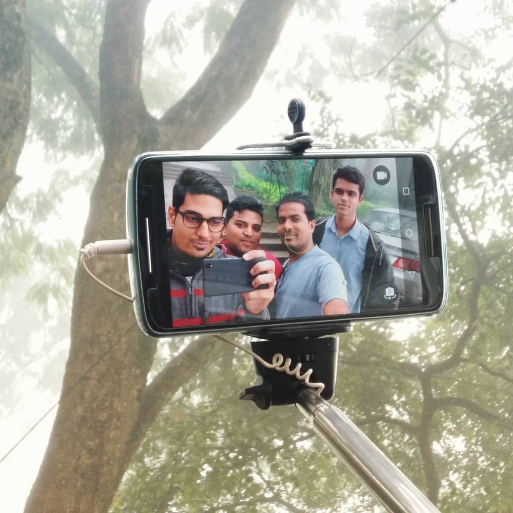
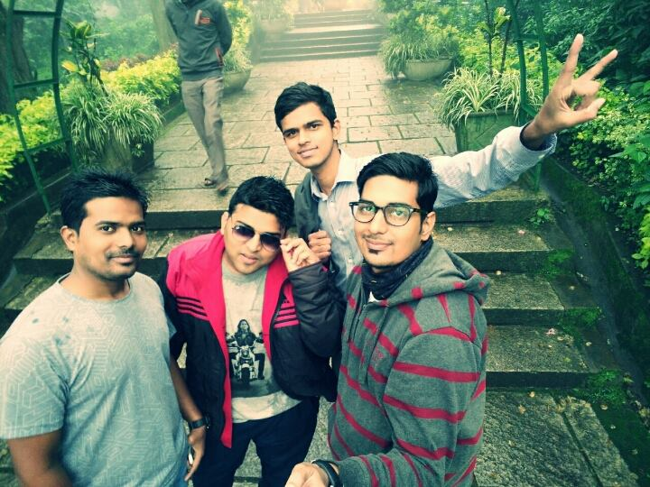
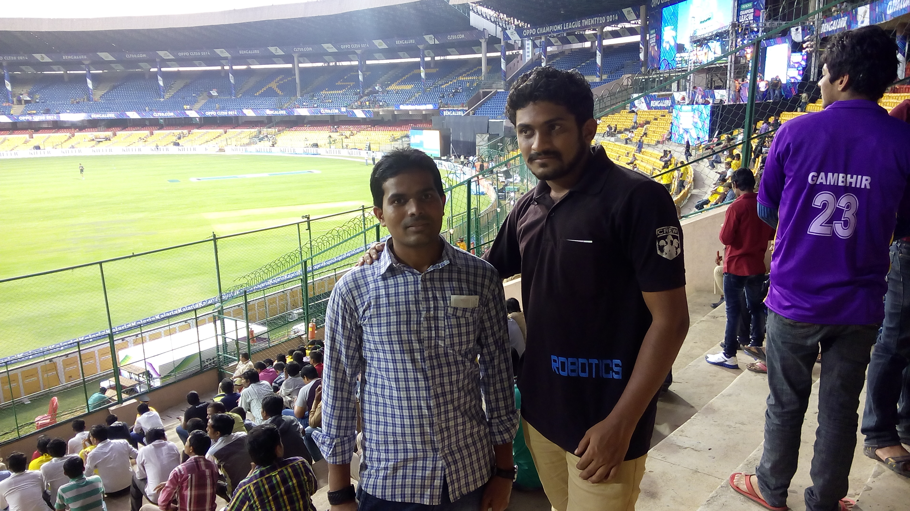

“A journey is best measured in friends, rather than miles.”
Kunti betta trekking...
We had an awesome time at Kunti betta trekking. People who have never been to trekking can also try, we started at 11pm and reached there around 3am than started treaking around 3:30am. We didn't face any difficulty, in fact we had the best time. After all, place never matters.....what really matters is the company, and I had an awesome friends with me :#Mediboxers.
- 

- 
Nandi Hills...2
Bangalore,Karnataka. Nandi hills is famous for its scenic beauty and excellent climate conditions. Many people visit Nandi Hills to experience the picturesque view of Sun Rise. Nandi Hills, at the height of 4851 feet above sea level is, very popular picnic spot . It was saturday morning when we set out for our Trip We started our journey at 3:30 am in the morning so that we can reach Nandi hills around 5:30am am to see the sunrise. I was accompanied with my 3 other GPS members(Shreyas,Ashpaq,Yogesh). #Mist #inception #selfie #bestfriends #onepluslife — with Yogesh Lohar, Arif Mujawar and Ashfaq Ahmed at Nandi Hills, Bangalore, Karnataka.
Nandi Hills...1
Bangalore,Karnataka. Nandi hills is famous for its scenic beauty and excellent climate conditions. Many people visit Nandi Hills to experience the picturesque view of Sun Rise. Nandi Hills, at the height of 4851 feet above sea level is, very popular picnic spot . It was sunday 15th Dec 2015 morning when we set out for our Trip We started our journey at 4 am in the morning so that we can reach Nandi hills around 6 am am to see the sunrise. This is a nice place near Bangalore which is located in the Town Nandi. It is a very good place for cycling and biking. And peoples from Bangalore specifically visit this place for this reason at times. Besides that it has numerous scenic beauties around it like they are many temples which are located in this place. it is also a place of historical importance, where there is tipu's summer palace and Fort.
Go Karting...(The Fast and the Furious)
Bangalore,Karnataka. We had our team get-together at ezone club entertainment- is a very huge area and has go-karting as one of their activities. It was great and we had lot of fun. Place not to miss in Bengaluru and can visit again.

Wonderla Amusement Park
Wonderla Amusement Park Bangalore. Wonderla water park of Bangalore is one of the biggest enjoyment theme and water park in India! The dry and wet rides of wonderla Bangalore is awesome you can enjoy their very much as compared to other theme and water parks of India* . Their are lots of dry rides , which makes us hilarious experiences. and there also lots of big and small wet rides and this are mind blowing rides I have ever experienced.#Arif Mujawar,Sai Krishna N and Arjun Hasbe at #Wonderla Amusement Park Bangalore.
- 
chinnaswamy stadium Bangalore
I am a big fan of cricket in india and chinnaswamy stadium, Banglore is my first debut stadium for watching champions league 2014 Chennai Super Kings v Dolphins well CSK opted to bat first and than rest was history csk scored 242 runs and in T20 242 can you imagin how entertaining it was...and finally CSK won the match.

Shiroda Beach (Maharashtra)
Shiroda beach ,our final year trip it was one of the best trip among other trips we all had great time well with you all (amit,Anusha,jyoti and me) its always special:) never forget those jokes #Fun#friends#forever